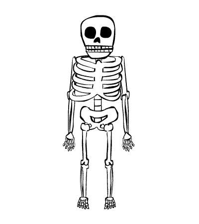

About Me!
'm Elmer C. Alvarado originated from Guagua Pampanga. I'm 20 years of age and currently taking my studies at La Verdad Christian College, Apalit Pampanga. I took Bachelor of Arts in Information System as my career because I want to cultivate my knowledge in programming languages and in all aspect of Computer Related issues. I love reading printed and non-printed materials, I'm a friendly person but sometimes they misinterpret/misjudge that I'm a snobber, not quite friendly or unapproachable. I like to have a talk to someone who knows alot but in the contrary I seldom have a conversation to a man/women who utter unimportant things. Formerly I'm a catholic but with God's calling I became a member of the Members Church of God International (MCGI) last February 12, 2012. Thanks be to God for all his unspeakable gift.